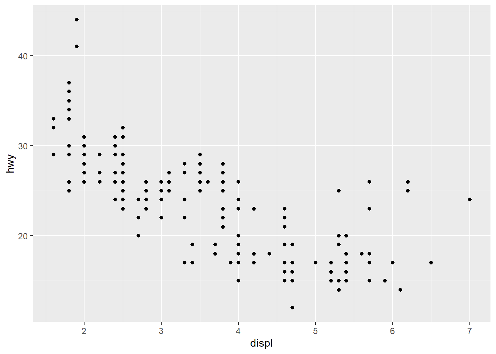

Week 1: Introduction to Data Visualization & R
Learning Objectives
By the end of this week, you will be able to:
- Articulate why data visualization is essential for understanding data
- Define visualization using Kosara’s framework
- Explain the lessons of Anscombe’s Quartet and the Datasaurus Dozen
- Install and configure R, RStudio, and essential packages
- Create a basic R Markdown document
- Produce simple plots using ggplot2
Why Visualize Data?
Data visualization is far more than making pretty pictures. It is one of the most powerful tools we have for making sense of information. But what exactly counts as a “visualization”?
Robert Kosara offers a useful three-part definition. For something to qualify as a visualization, it must be:
- Based on non-visual data – it transforms abstract data into a visual form
- Produce an image – the result is something we can see
- The result must be readable and recognizable – a viewer should be able to read back the original data relationships from the image
This definition helps us distinguish true data visualization from decoration or illustration. A chart that distorts the underlying data may be an image, but it fails the third criterion. An artistic rendering that is not grounded in data fails the first.
Visualization can be fun and engaging while remaining informative.
Visualization serves many purposes. It can explore data, revealing patterns we did not expect. It can explain findings to an audience. And it can convince – making a persuasive case grounded in evidence.

Effective visualizations are convincing because they communicate clearly.
Ignatian Reflection: Seeing Truthfully
St. Ignatius emphasized the importance of seeing the world as it truly is – not as we wish it to be. Data visualization, at its best, serves this same goal. When we create honest, clear graphics, we practice a form of truthful seeing. When we distort or mislead with data, we obscure truth. As you learn visualization this semester, consider: How can the charts I create help others see the world more clearly and act more justly?
Anscombe’s Quartet
In 1973, statistician Francis Anscombe constructed four small datasets that would become one of the most famous examples in all of statistics. Each dataset has nearly identical summary statistics – the same means, standard deviations, and correlations. Yet when you plot them, they tell completely different stories.
This is the fundamental lesson: summary statistics alone can be deeply misleading. You must always visualize your data.
Let us examine this directly. We will work through this step by step so you can run each chunk on its own and knit after each one.
Step 1: Load the tidyverse
First, we load the tidyverse package, which gives us
access to ggplot2, dplyr, tidyr,
and other tools we will use throughout the course.
Step 2: Reshape the Anscombe data
The built-in anscombe dataset stores the four sets in
wide format. We reshape it into tidy (long) format so that each row
represents one observation with its set label.
anscombe_tidy <- anscombe %>%
pivot_longer(everything(),
names_to = c(".value", "set"),
names_pattern = "(.)(.)")Take a quick look at the first few rows to see what the tidy data looks like:
## # A tibble: 12 × 3
## set x y
## <chr> <dbl> <dbl>
## 1 1 10 8.04
## 2 2 10 9.14
## 3 3 10 7.46
## 4 4 8 6.58
## 5 1 8 6.95
## 6 2 8 8.14
## 7 3 8 6.77
## 8 4 8 5.76
## 9 1 13 7.58
## 10 2 13 8.74
## 11 3 13 12.7
## 12 4 8 7.71Step 3: Compute summary statistics
Now we compute the summary statistics for each of the four sets. Watch how similar they are:
anscombe_tidy %>%
group_by(set) %>%
summarise(
mean_x = mean(x),
mean_y = mean(y),
sd_x = sd(x),
sd_y = sd(y),
cor_xy = cor(x, y)
)## # A tibble: 4 × 6
## set mean_x mean_y sd_x sd_y cor_xy
## <chr> <dbl> <dbl> <dbl> <dbl> <dbl>
## 1 1 9 7.50 3.32 2.03 0.816
## 2 2 9 7.50 3.32 2.03 0.816
## 3 3 9 7.5 3.32 2.03 0.816
## 4 4 9 7.50 3.32 2.03 0.817The numbers are strikingly similar across all four sets. If you only looked at these statistics, you would conclude the four datasets are essentially the same.
Step 4: Plot the four datasets
Now let us see what the data actually look like:
ggplot(anscombe_tidy, aes(x = x, y = y)) +
geom_point(color = "#002967", size = 3, alpha = 0.8) +
geom_smooth(method = "lm", se = FALSE, color = "#C41E3A") +
facet_wrap(~set, ncol = 2) +
labs(title = "Anscombe's Quartet",
subtitle = "Same statistics, completely different stories") +
theme_minimal(base_size = 14)## `geom_smooth()` using formula = 'y ~ x'Anscombe’s Quartet: four datasets with nearly identical summary statistics but very different visual patterns.
Set 1 shows a straightforward linear relationship. Set 2 reveals a curved pattern that a linear model misses entirely. Set 3 has a perfect linear relationship broken by a single outlier. Set 4 shows that one extreme point can create the illusion of a relationship where none exists.
The lesson is clear: always plot your data.
Attribution: Anscombe, F.J. (1973). “Graphs in Statistical Analysis.” The American Statistician, 27(1), 17–21.
The Datasaurus Dozen
If Anscombe’s Quartet made the case with four datasets, the Datasaurus Dozen drives it home with thirteen. Created by Matejka and Fitzmaurice in 2017, these datasets all share the same summary statistics to two decimal places – yet their shapes range from a star to a circle to a dinosaur.

The Datasaurus Dozen: thirteen datasets with identical summary statistics and wildly different distributions.
We can use the datasauRus package to plot all thirteen
datasets at once:
ggplot(datasaurus_dozen, aes(x = x, y = y)) +
geom_point(alpha = 0.6, color = "#002967", size = 0.8) +
facet_wrap(~dataset, ncol = 4) +
labs(title = "The Datasaurus Dozen",
subtitle = "Never trust summary statistics alone",
caption = "Source: datasauRus package (Matejka & Fitzmaurice, 2017)") +
theme_minimal(base_size = 14)All thirteen Datasaurus Dozen datasets share nearly identical summary statistics despite their wildly different shapes.
Every single one of these panels has the same mean of x, mean of y, standard deviation of x, standard deviation of y, and correlation between x and y. The message is unmistakable: visualization is not optional.
Why R?
R is a programming language and environment designed for statistical computing and graphics. It was created in the early 1990s by Ross Ihaka and Robert Gentleman at the University of Auckland, New Zealand, as an open-source implementation of the S language.
The R Project for Statistical Computing.
Since then, R has grown into one of the most widely used tools for data analysis and visualization in the world. The Comprehensive R Archive Network (CRAN) hosts thousands of contributed packages. The chart below is generated live from CRAN data – a nice preview of what you will learn to build in this course.
The growth of CRAN packages over time, generated from live CRAN data.
Why do we use R for this course rather than Excel, Tableau, or Python?
- Built for statistics and graphics. R was designed
from the ground up for data analysis and visualization. The
ggplot2package implements a principled grammar of graphics that makes it possible to build complex, layered visualizations systematically. - Reproducibility. R scripts and R Markdown documents create a complete record of your analysis, from raw data to final graphic. Anyone can re-run your code and get the same results.
- Community. R has an enormous and welcoming community. If you have a question, someone has likely answered it on Stack Overflow or in a blog post.
- It is free and open source. No licenses, no fees, no barriers.
You do not need to be a programmer. Many students in this course have no prior coding experience, and that is perfectly fine. R has a learning curve, but the payoff is enormous. We will learn just enough R to create effective visualizations – and you may find that you enjoy it more than you expected.
Setting Up Your Environment
To get started, you need two pieces of software:
- R – the language itself. Download it from CRAN.
- RStudio – an integrated development environment (IDE) that makes working with R much easier. Download the free desktop version from Posit.
Install R first, then RStudio. Once both are installed, open RStudio and run the following code in the console to install the packages we will use throughout the course:
install.packages(c(
"tidyverse", # data manipulation and ggplot2
"datasauRus", # Datasaurus Dozen datasets
"rmarkdown", # R Markdown documents
"knitr", # document rendering
"scales", # scale functions for visualization
"viridis", # colorblind-friendly palettes
"RColorBrewer", # color palettes
"patchwork", # combining multiple plots
"plotly", # interactive visualizations
"gapminder", # global development data
"palmerpenguins", # penguin measurement data
"sf", # spatial data
"leaflet", # interactive maps
"DT", # interactive tables
"gganimate", # animated plots
"ggthemes", # additional ggplot2 themes
"ggrepel", # non-overlapping text labels
"treemapify", # treemap geom for ggplot2
"GGally" # ggplot2 extensions
))About RStudio: RStudio is not a separate programming language – it is an interface for working with R. Think of R as the engine and RStudio as the dashboard. When you open RStudio, you will see four panes: the Source editor (top-left), the Console (bottom-left), the Environment (top-right), and the Files/Plots/Help viewer (bottom-right). We will become very familiar with this layout over the semester.
Common Week 1 Errors and How to Fix Them
If you run into problems this week, check here first before posting on the Canvas Discussion board. These are the most common issues students encounter when getting started.
1. “Error in library(tidyverse) : there is no package called ‘tidyverse’”
This means the package has not been installed yet. R does not come with tidyverse pre-installed. Run the install command first:
install.packages("tidyverse")You only need to install a package once. After that, you load it with
library(tidyverse) each time you start a new session.
2. “could not find function ‘ggplot’”
This means you forgot to load the tidyverse at the top of your script
or R Markdown document. Add library(tidyverse) to your
setup chunk and run it before your plotting code. Every R Markdown
document should have a setup chunk near the top that loads the packages
you need.
3. The Knit button is greyed out or produces an error
Check that your file is saved with the .Rmd extension,
not .R. R scripts (.R files) cannot be knitted
– only R Markdown files (.Rmd) can. In RStudio, go to File
> Save As and make sure the filename ends in .Rmd.
4. “object ‘x’ not found”
This usually means one of two things: (a) you have a typo in a
variable name, or (b) you did not run an earlier code chunk that creates
the variable. In R Markdown, chunks run in order from top to bottom when
you knit. Make sure every chunk that creates a variable appears before
any chunk that uses it. Also check for capitalization – R is
case-sensitive, so myData and mydata are
different objects.
5. Pandoc error when knitting
If you see an error mentioning “pandoc” or “LaTeX,” your RStudio
installation may be out of date. Go to posit.co/download/rstudio-desktop/
and install the latest version of RStudio, which bundles a current
version of Pandoc. If you are trying to knit to PDF, install the
tinytex package by running
install.packages("tinytex") followed by
tinytex::install_tinytex(). For this course, knitting to
HTML is sufficient.
Introduction to R Markdown
R Markdown is a document format that lets you combine narrative text, code, and output (including graphics) in a single file. When you “knit” an R Markdown document, R executes all the code chunks and weaves the results together with your text into a finished document – an HTML page, a PDF, a Word document, or even a presentation.
An R Markdown file (.Rmd) has three main components:
YAML Header
The YAML header appears at the very top of the file, enclosed in
triple dashes (---). It controls document-level settings
such as the title, author, date, and output format.
Markdown Text
The body of the document uses Markdown syntax for formatting. You can
create headings with #, bold text with
double asterisks, italics with single asterisks, lists, links,
and more.
Code Chunks
R code is embedded in fenced code chunks that begin with
```{r} and end with ```. You can control each
chunk’s behavior using options like echo (show/hide the
code), eval (run or skip execution),
fig.width, and fig.height.
Here is a minimal R Markdown template to get you started:
# This is what a basic .Rmd file looks like:
#
# ---
# title: "My First Visualization"
# author: "Your Name"
# date: "2026-01-15"
# output: html_document
# ---
#
# ## Introduction
#
# This is my first R Markdown document.
#
# ```{r setup, message=FALSE, warning=FALSE}
# library(tidyverse)
# ```
#
# ## A Simple Plot
#
# ```{r first-plot, fig.width=6, fig.height=4}
# ggplot(mpg, aes(x = displ, y = hwy, color = class)) +
# geom_point(size = 2) +
# labs(title = "Engine Displacement vs. Highway MPG",
# x = "Engine Displacement (L)",
# y = "Highway MPG",
# color = "Vehicle Class") +
# theme_minimal()
# ```
#
# ## Conclusion
#
# Visualization reveals patterns that numbers alone cannot.Tip: Use the Knit button in RStudio (or the keyboard shortcut Ctrl+Shift+K) to render your R Markdown document. Start by knitting frequently – it is much easier to catch errors when you have only added a small amount of new content.
Your First ggplot2 Visualization
Before jumping into the exercises, let us build one more plot together from scratch. This will reinforce the core pattern of ggplot2: data + aesthetic mapping + geometry.
Step 1: Load the data and packages
We will use the mpg dataset that comes with ggplot2. It
contains fuel economy data for 38 popular car models.
Step 2: Create a basic scatter plot
The ggplot() function initializes a plot. We map
displ (engine displacement) to the x-axis and
hwy (highway miles per gallon) to the y-axis. Then we add
geom_point() to draw the points.

Step 3: Add color and polish
Now we map the class variable to color, increase the
point size, and add informative labels.
ggplot(mpg, aes(x = displ, y = hwy, color = class)) +
geom_point(size = 2.5, alpha = 0.8) +
labs(
title = "Engine Size vs. Highway Fuel Economy",
subtitle = "Larger engines tend to have lower fuel economy",
x = "Engine Displacement (liters)",
y = "Highway MPG",
color = "Vehicle Class"
) +
theme_minimal(base_size = 14)A polished scatter plot mapping engine size to highway fuel economy, colored by vehicle class.
Notice the pattern: we start simple and layer on complexity. This is the ggplot2 philosophy, and we will build on it throughout the course.
Exercises
Week 1 Exercises
Exercise 1: Install R and RStudio
Download and install R from CRAN and RStudio from Posit. Open
RStudio and verify that the console displays the R version. Run the
install.packages() command from the Setting Up section
above to install the course packages. Take a screenshot of your RStudio
console showing the R version and paste it into your R Markdown document
for this week.
Exercise 2: Create and Knit Your First R Markdown Document
In RStudio, go to File > New File > R Markdown. Give it a title
like “Week 1 Practice” and your name as the author. Click OK, then click
the Knit button to render the default template. Examine the output and
note how the code chunks, text, and results are woven together. Then
delete the default content below the YAML header and replace it with the
following. Fill in the blanks (___) and knit again:
# Paste this into your .Rmd file (below the YAML header):
#
# ## About Me
#
# My name is ___ and I am studying ___ at Gonzaga University.
#
# ## A Quick Plot
#
# ```{r about-me-plot, message=FALSE, warning=FALSE}
# library(tidyverse)
# ggplot(mpg, aes(x = ___, y = ___)) +
# geom_point(color = "#002967") +
# labs(title = "My First ggplot",
# x = "___",
# y = "___") +
# theme_minimal()
# ```
#
# ## What I Learned
#
# One thing I learned from the Week 1 materials is ___.Hint for the blanks: Pick any two numeric columns
from the mpg dataset. You can see all available columns by
running glimpse(mpg) in the console. Good choices include
displ, hwy, cty, and
year. Make sure your axis labels match the variables you
chose.
Exercise 3: Reproduce and Modify Anscombe’s Quartet
Copy the Anscombe code from this page into a new R Markdown document. Knit it to make sure it works. Then modify the plot in the following ways – fill in the blanks:
library(tidyverse)
anscombe_tidy <- anscombe %>%
pivot_longer(everything(),
names_to = c(".value", "set"),
names_pattern = "(.)(.)")
# Modify the plot: change the point color, add a different title,
# and use a different theme
ggplot(anscombe_tidy, aes(x = x, y = y)) +
geom_point(color = "___", size = ___, alpha = 0.8) +
geom_smooth(method = "lm", se = FALSE, color = "___") +
facet_wrap(~set, ncol = 2) +
labs(title = "___",
subtitle = "___") +
theme___(base_size = 14)Hint: For colors, try any valid color name like
"steelblue", "darkred", or
"forestgreen". For the theme, try
theme_classic(), theme_light(), or
theme_bw(). Run ?theme_minimal in the console
to see a list of built-in themes.
Exercise 4: Explore a New Dataset
The palmerpenguins package includes measurements of
three penguin species. Use the template below to create a scatter plot.
Fill in the blanks to map the correct variables and add labels:
library(tidyverse)
library(palmerpenguins)
# First, take a look at the data
glimpse(penguins)
# Now create a scatter plot of bill length vs. bill depth,
# colored by species
ggplot(penguins, aes(x = ___, y = ___, color = ___)) +
geom_point(size = 2, alpha = 0.7) +
labs(
title = "Palmer Penguins: Bill Dimensions",
x = "___",
y = "___",
color = "___"
) +
theme_minimal(base_size = 14)Hint: The bill measurement columns are
bill_length_mm and bill_depth_mm. The species
column is species. Your axis labels should describe what
the variable measures, including units.
After creating the plot, write 2-3 sentences in your R Markdown document describing what patterns you see. Do the three species cluster differently?
Exercise 5: Read Healy Chapter 1
Read Chapter 1 (“Look at Data”) of Kieran Healy’s Data Visualization: A Practical Introduction. As you read, write down three key takeaways in your R Markdown document. What surprised you? What confirmed something you already suspected?
Try It: Interactive Sandbox
AI & This Concept Before accepting any AI-generated analysis at face value, always ask it to plot the data first. Summary statistics alone hide the real story — and AI tools summarize by default. The sandbox below shows exactly why this matters.
Datasaurus Explorer — Same Stats, Different Shapes
Attributions
This course material draws on and is inspired by the work of many scholars and practitioners:
- Vivek H. Patil – foundational course design and materials for data visualization at Gonzaga University
- Anscombe, F.J. (1973). “Graphs in Statistical Analysis.” The American Statistician, 27(1), 17–21.
- Matejka, J. & Fitzmaurice, G. (2017). “Same Stats, Different Graphs: Generating Datasets with Varied Appearance and Identical Statistics through Simulated Annealing.” ACM SIGCHI Conference on Human Factors in Computing Systems.
- Kosara, R. – writings on the definition and theory of visualization (eagereyes.org)
- Muenchen, R.A. – “The Popularity of Data Science Software” and analysis of R’s growth
- Wilke, C.O. – Fundamentals of Data Visualization (O’Reilly, 2019)
- Healy, K. – Data Visualization: A Practical Introduction (Princeton University Press, 2018)